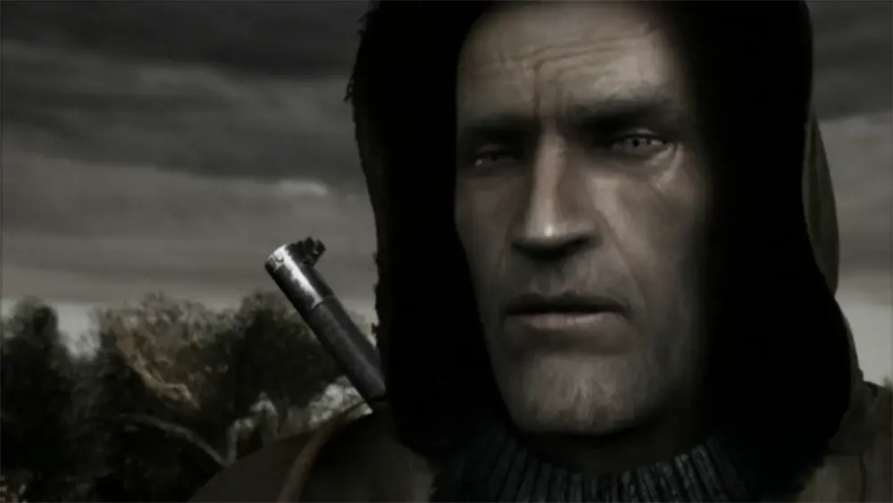

Стрілець: Легенда Зони
Хто це?
Шрам — головний герой «S.T.A.L.K.E.R.: Чисте Небо» та один із ключових сюжетних персонажів «S.T.A.L.K.E.R. 2: Серце Чорнобиля».
Він є професійним найманецем, що діяв у Зоні відчуження станом на 2011 рік. Відомий унікальною здатністю виживати під час викидів, які для більшості сталкерів є смертельними. Завдяки цьому став цінним союзником угруповання «Чисте небо», допомагаючи їм зупинити Стрільця на шляху до центру Зони.
Після подій «S.T.A.L.K.E.R.: Чисте Небо», Шрам зникає з поля зору сталкерських угруповань, але через роки знову з’являється у Зоні. Під час подій «S.T.A.L.K.E.R. 2: Серце Чорнобиля», він постає як лідер нового угруповання «Іскра», що прагне впливу й контролю в умовах оновленої боротьби за ресурси та таємниці Зони.
Передісторія
Про минуле Шрама мало що відомо, окрім того що він був народжений у 1979 році.
Шрам в різних частинах S.T.A.L.K.E.R.
Шрам в «S.T.A.L.K.E.R.: Чисте Небо»
Відома нам історія Шрама починається на Болотах: найманець веде драговинами групу вчених,
однак під час експедиції стається потужний викид, який пізніше стали називати «Великим».
Дивом уцілілого Шрама знаходить загін угруповання «Чисте небо» і приносить до себе на базу.
Там його оглядає Каланча і помічає розлади у нервовій системі Шрама, які, скоріш за все, є
наслідками викиду, і повідомляє про це лідера угруповання, Лебедєва.
На ранок найманець приходить до тями. Під час розмови з Холодом, барменом на базі «Чистого неба»,
Шрама викликає до себе Лебедєв. У той же час зазнає нападу другий форпост угруповання, і найманцеві дають команду допомогти.
Пізніше Лебедєв ставить Шрама перед фактом, що якщо постійні викиди у Зоні не зупинити, то його
нервова система вигорить, і допомогти «Чистому небу» знайти причини викидів — у його ж інтересах.
Першою і єдиною зачіпкою є сталкер, що нещодавно цікавився дивними деталями у Сидоровича. Але перед
тим, як відправитися на Кордон, спочатку треба допомогти «Чистому небу» повернути контроль над Болотами
і перехопити ініціативу у ренегатів — сумнівного угруповання, дуже подібного до бандитів.

Шрам в «S.T.A.L.K.E.R.: Серце Чорнобиля»
Після провалу операції на ЧАЕС Шрам вижив, але став піддослідним у секретних експериментах «О-Свідомості».
Протягом багатьох років його тримали в капсулі, де піддавали «промивці мізків», намагаючись стерти його особистість
найманця та замінити її спогадами іншої людини — полковника Маршала. Це призвело до серйозного роздвоєння особистості:
тепер Шрам став набагато емоційнішим та агресивнішим, проте зберіг свою унікальну стійкість до пси-випромінювання та Викидів.
Звільнившись, він очолив угруповання «Іскра», ставши радикальним лідером, який прагне захистити Зону від контролю держави
та корпорацій. У сюжеті він виступає як наставник або складний союзник Скіфа, ведучи його до серця Зони. Фінал його історії
залежить від вибору гравця: Шрам може або стати легендарним визволителем Зони, або загинути в боротьбі за власні суперечливі
ідеали, намагаючись знайти спокій у хаосі, який зруйнував його розум.